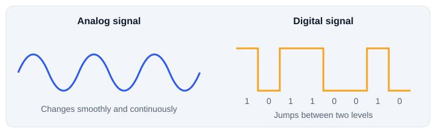

1. What data transmission is
Data transmission is moving data from one device to another through a medium. Text, photos, audio, video and files all have to be turned into signals that a cable or the air can carry.
2. Data and signals
Computers store data as bits, each a 0 or a 1. A bit cannot travel through a cable by itself, so the network interface turns bits into a signal.
| Technology | Signal used |
|---|---|
| Ethernet copper cable | Electrical changes |
| Fiber optic cable | Pulses of light |
| Wi-Fi | Radio waves |
3. Analog and digital signals

| Analog | Digital | |
|---|---|---|
| Shape | Continuous | Discrete levels |
| Example | Traditional voice signal | Computer data |
| In networking | Used in some systems | Dominant today |
4. Serial and parallel
Parallel looks faster, but sending many bits side by side causes timing problems over longer distances. Modern high speed networking mostly uses serial links, which can run very fast without those problems.
5. Synchronous and asynchronous
| Synchronous | Asynchronous | |
|---|---|---|
| Timing | Sender and receiver share coordinated timing | No shared clock |
| How data is marked | Sent in blocks or frames | Start and stop bits around each character |
| Overhead | Efficient for steady streams | Start and stop bits add overhead |
6. Transmission modes
Modes describe which direction data can flow.
| Mode | Meaning | Example |
|---|---|---|
| Simplex | One direction only | Radio broadcast |
| Half duplex | Both directions, one at a time | Walkie talkie |
| Full duplex | Both directions at the same time | Phone call |
Modern switched Ethernet links normally run in full duplex.
7. Wired media
| Medium | Signal | Notes | Common use |
|---|---|---|---|
| Twisted pair | Electrical | Copper pairs twisted to reduce interference. Cat5e, Cat6 and Cat6a | Ethernet LANs |
| Coaxial | Electrical | Central conductor with insulation and shielding | Cable television and broadband |
| Fiber optic | Light | High bandwidth, long distance, low signal loss | Backbones and data centers |
8. Wireless media
| Medium | Notes | Example |
|---|---|---|
| Radio waves | Most common for everyday wireless | Wi-Fi and Bluetooth |
| Microwave | Point to point links | Links between towers |
| Infrared | Short range, needs a clear line | Remote controls |
Wireless does not mean no signal. The signal is still physical, it just travels through the air instead of a cable.
9. What affects transmission
- Distance: signals weaken over distance, called attenuation.
- Interference and noise: unwanted signals can cause errors.
- Bandwidth: the link capacity limits how much can be sent.
- Medium quality: poor cables, connectors or a crowded radio space hurt performance.
- Congestion: heavy traffic lowers the rate at which data is delivered.
A link can have high capacity on paper and still deliver less in practice. The Throughput topic explains why.
10. A real example
You send a WhatsApp message. The phone turns it into digital data and sends it over a radio link to a Wi-Fi access point or mobile tower. From there it moves over copper and fiber links, through routers and switches, until it reaches the server and then your friend's phone. One message can cross radio, copper and fiber media on the way.
11. Quick check
What is the difference between data and a signal?
Data is the information as bits. A signal is the physical form that carries it across the medium.
Which medium sends information as pulses of light?
Fiber optic cable.
Which mode lets both devices send at the same time?
Full duplex.
Why do modern fast links mostly use serial transmission?
Parallel links have timing problems over distance, while serial links can run very fast without them.
Name two things that can reduce transmission quality.
For example interference, noise, distance, poor cables or congestion.